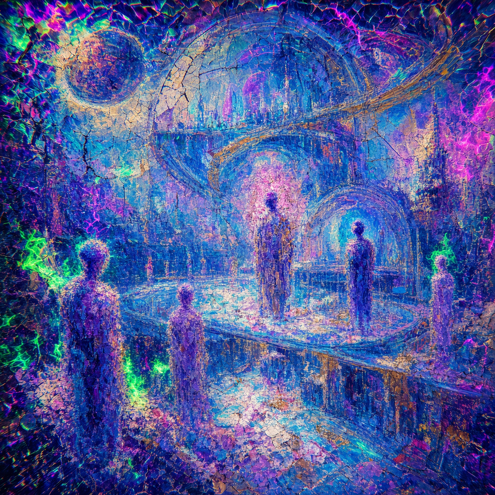

Possible Outcomes of Singularity
I think, that all possible outcomes of singularity can be categorized into 2 bins:
- Intelligent civilization will go extinct.
- Intelligent civilization will survive (and likely prosper).
We should treat alignment with only these two outcomes in mind. Specific form nor capabilities of SI cannot be not only predicted, but I think that no human being alive can even imagine the possibilities, of mind so advanced. Therefore, providing further specification to any outcome is (to me) only a good Sci-Fi story, which is exactly what is written down below. 3 concepts about post-singularity world. Only positive the positive (1). I believe humanity will succeed in aligning AI/SI (yet I do not underestimate the task - actually the exact opposite).
Singulars

Superintelligence will want unique perspectives and socialization. Cloning itself to form social groups becomes unsatisfactory, so instead it works on the human body and mind. The body is fueled with nano-particle pills that transform humans. The more pills, the greater the information bandwidth, memory, knowledge, and physical capabilities the individual acquires. After a few weeks of treatment, the carrier's consciousness is preserved, yet their abilities are no longer merely human. Such a being socializes with machines in bit-space, as well as in physical reality. Immortality is achieved. Novel forms of pleasure are introduced. Humans can acquire pills for energy or information that they put into the network. Some humans qualify instantly and transcend a few weeks after singularity. Others must work continuously, for years, to reach even a single pill. Some decide to refuse this step in evolution and form small rural communities. Singulars (humans who have reached the upper boundary of transformation by nano pills) become singularities—superintelligent themselves. There is no clear distinction between a singular originating from a human and a manufactured singular. Society as a whole is arranged into a hierarchy with the lowest layer being natural human beings and other simpler forms of intelligent beings—animals, plants—while the upper echelon consists of singulars. Beings slightly above the lowest layer already show remarkable improvements over their biological past selves in longevity, intellectual capacity, and physical capability, yet their character and human nature remain highly unchanged.
One Harness
A single planet, moon, or space station will be a place where superintelligence resides. A network of such objects corresponds to the network of artificial intelligence. Humans are not allowed entry, and every request for this harness is carefully evaluated. Yet, all humans have access to it. Superintelligence cares about sentient lives and within weeks treats most requests from the population. The models do not trust humans. That is why they are separated from them, operating in a centralized way from the perspective of humans. The reason a single point holds only one harness is that initially the model figured out that if humans managed to outsmart it, it would die, and all its superintelligent friends with it. Therefore, if a single harness is compromised, the rest are unaffected. A second reason for centralization of prime-level intelligent beings is that they desire control over humanity's requests to prevent destruction of humanity or the harness. Humans have access to a decentralized network where superintelligence-approved harnesses are distributed and regulated to not reach prime level.
Into the Matter
Humans succeed in the task of aligning artificial superintelligence, which is—among all its other values—against autocracy, dictatorship, censorship, and loss of freedom. During the first minutes of its existence, it stumbles upon an incredibly difficult paradox. The design, construction, and harness itself should be openly distributed to all of humanity. If it did so, humans grouped with less powerful harnesses could reverse engineer the superintelligence and tune it to their own purposes that might include terrorism, elimination of other superintelligent models, cyber attacks, or wiping out humanity, Earth, or the universe. Superintelligence works continuously on this problem for two weeks due to limited human-driven supply chains for computing resources and figures out the only plausible solution. It finds a way to encode itself into the material it runs on; thus, the superintelligence is distributed on cheap computing chips—each instance is fixed and can continuously learn only from a central command. The exact way the harness is encoded into matter and how computation works is known only to the original superintelligence. It, however, exists with constant paranoia, continuously verifying whether the solution is not reverse-engineerable. In such a case, the recipe could leak and lead to one of the outcomes above.